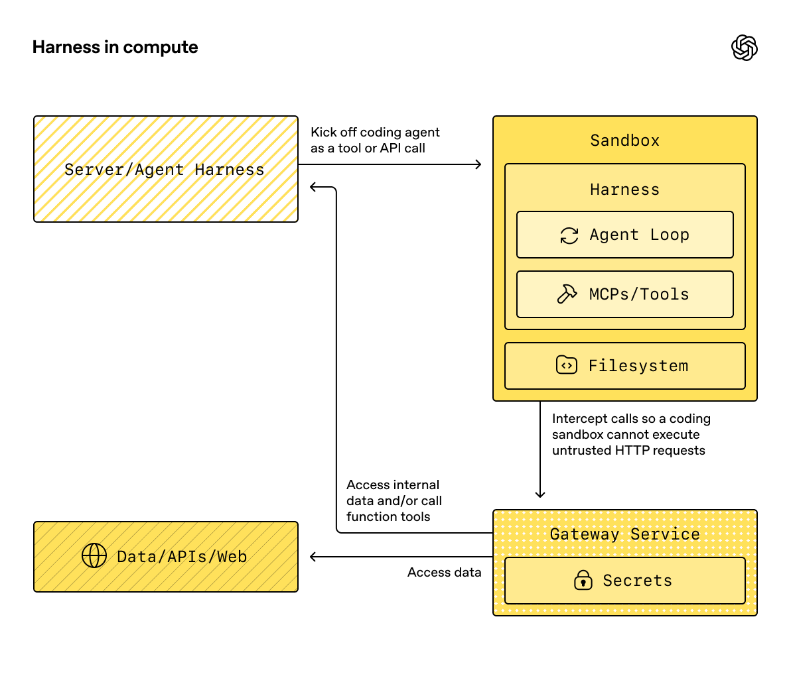

概念
Beta 功能
沙箱智能体目前处于 Beta 阶段。在正式发布前，API 细节、默认设置和支持的功能可能会发生变化，并且随着时间推移还会提供更多高级功能。
现代智能体在能够操作文件系统中的真实文件时效果最佳。沙箱智能体可以利用专用工具和 shell 命令检索和处理大型文档集、编辑文件、生成工件并运行命令。沙箱为模型提供持久工作区，智能体可在其中代表您完成工作。Agents SDK 中的沙箱智能体可帮助您轻松运行与沙箱环境配套的智能体，方便在文件系统中准备所需文件，并编排沙箱，从而轻松地大规模启动、停止和恢复任务。
您可以围绕智能体所需的数据定义工作区。工作区可以从 GitHub 仓库、本地文件和目录、合成任务文件、S3 或 Azure Blob Storage 等远程文件系统，以及您提供的其他沙箱输入开始构建。

SandboxAgent 仍然是一个 Agent。它保留了常规智能体接口，例如 instructions、prompt、tools、handoffs、mcp_servers、model_settings、output_type、安全防护措施和钩子，并且仍通过常规的 Runner API 运行。变化在于执行边界：
SandboxAgent定义智能体本身：包括常规智能体配置，以及default_manifest、base_instructions、run_as等沙箱专用默认设置，还有文件系统工具、shell 访问、技能、记忆或压缩等能力。Manifest声明新沙箱工作区所需的初始内容和布局，包括文件、仓库、挂载和环境。- 沙箱会话是运行命令和修改文件的实时隔离环境。
SandboxRunConfig决定运行如何获得该沙箱会话，例如直接注入会话、从已序列化的沙箱会话状态重新连接，或通过沙箱客户端创建新的沙箱会话。- 保存的沙箱状态和快照让后续运行能够重新连接到先前的工作，或使用已保存的内容初始化新的沙箱会话。
Manifest 是新会话的工作区约定，而不是每个实时沙箱的完整事实来源。一次运行的实际工作区也可以来自复用的沙箱会话、已序列化的沙箱会话状态，或运行时选择的快照。
在本页中，“沙箱会话”是指由沙箱客户端管理的实时执行环境。它不同于会话中所述的 SDK 对话式 Session 接口。
外层运行时仍负责审批、追踪、任务转移和恢复记录。沙箱会话负责命令、文件变更和环境隔离。这种职责划分是该模型的核心组成部分。
各组成部分的协作方式
沙箱运行将智能体定义与每次运行的沙箱配置结合起来。运行器会准备智能体，将其绑定到实时沙箱会话，并可保存状态以供后续运行使用。
flowchart LR
agent["SandboxAgent<br/><small>full Agent + sandbox defaults</small>"]
config["SandboxRunConfig<br/><small>client / session / resume inputs</small>"]
runner["Runner<br/><small>prepare instructions<br/>bind capability tools</small>"]
sandbox["sandbox session<br/><small>workspace where commands run<br/>and files change</small>"]
saved["saved state / snapshot<br/><small>for resume or fresh-start later</small>"]
agent --> runner
config --> runner
runner --> sandbox
sandbox --> saved沙箱专用默认设置保留在 SandboxAgent 上。每次运行的沙箱会话选项保留在 SandboxRunConfig 中。
可以将生命周期分为三个阶段：
- 使用
SandboxAgent、Manifest和能力定义智能体以及新工作区约定。 - 通过向
Runner提供SandboxRunConfig来执行运行，由其注入、恢复或创建沙箱会话。 - 稍后从运行器管理的
RunState、显式沙箱session_state或已保存的工作区快照继续运行。
如果只是偶尔需要将 shell 访问作为一种工具，请从工具指南中的托管 shell 开始。当工作区隔离、沙箱客户端选择或沙箱会话恢复行为属于设计的一部分时，请使用沙箱智能体。
适用场景
沙箱智能体非常适合以工作区为中心的工作流，例如：
- 编码和调试，例如针对 GitHub 仓库中的问题报告编排自动修复并运行针对性测试
- 文档处理和编辑，例如从用户的财务文档中提取信息并创建填写完成的税表草稿
- 基于文件的审核或分析，例如在回答前检查入职资料包、生成的报告或工件包
- 隔离的多智能体模式，例如为每个审核智能体或编码子智能体提供独立工作区
- 多步骤工作区任务，例如在一次运行中修复错误，之后再添加回归测试，或从快照或沙箱会话状态恢复
如果不需要访问文件或持续存在的文件系统，请继续使用 Agent。如果 shell 访问只是偶尔使用的一项能力，请添加托管 shell；如果工作区边界本身就是功能的一部分，请使用沙箱智能体。
沙箱客户端的选择
在 macOS 或 Linux 上进行本地开发时，请从 UnixLocalSandboxClient 开始。在 Windows 上，请改用 DockerSandboxClient 或托管提供商。在任何受支持的平台上，如果需要容器隔离或镜像一致性，请转用 DockerSandboxClient；如果需要由提供商管理执行，请转用托管提供商。
大多数情况下，SandboxAgent 定义保持不变，只需在 SandboxRunConfig 中更改沙箱客户端及其选项。有关本地、Docker、托管和远程挂载选项，请参阅沙箱客户端。
核心组成部分
| 层级 | 主要 SDK 组成部分 | 解答的问题 |
|---|---|---|
| 智能体定义 | SandboxAgent、Manifest、能力 |
将运行什么智能体，它应从什么新会话工作区约定开始？ |
| 沙箱执行 | SandboxRunConfig、沙箱客户端和实时沙箱会话 |
本次运行如何获得实时沙箱会话，工作在哪里执行？ |
| 保存的沙箱状态 | RunState 沙箱载荷、session_state 和快照 |
此工作流如何重新连接到先前的沙箱工作，或使用已保存的内容初始化新的沙箱会话？ |
主要 SDK 组成部分与这些层级的对应关系如下：
| 组成部分 | 负责的内容 | 应提出的问题 |
|---|---|---|
SandboxAgent |
智能体定义 | 此智能体应执行什么操作，哪些默认设置应随它一起使用？ |
Manifest |
新会话工作区的文件和文件夹 | 运行开始时，文件系统中应存在哪些文件和文件夹？ |
Capability |
沙箱原生行为 | 应为此智能体附加哪些工具、指令片段或运行时行为？ |
SandboxRunConfig |
每次运行的沙箱客户端和沙箱会话来源 | 本次运行应注入、恢复还是创建沙箱会话？ |
RunState |
运行器管理的已保存沙箱状态 | 我是否正在恢复先前由运行器管理的工作流，并自动将其沙箱状态延续下去？ |
SandboxRunConfig.session_state |
显式序列化的沙箱会话状态 | 我是否希望从已在 RunState 外部序列化的沙箱状态恢复？ |
SandboxRunConfig.snapshot |
用于新沙箱会话的已保存工作区内容 | 新沙箱会话是否应从已保存的文件和工件开始？ |
实际的设计顺序如下：
- 使用
Manifest定义新会话工作区约定。 - 使用
SandboxAgent定义智能体。 - 添加内置或自定义能力。
- 决定每次运行应如何在
RunConfig(sandbox=SandboxRunConfig(...))中获取其沙箱会话。
沙箱运行的准备过程
运行时，运行器会将该定义转换为由沙箱支持的具体运行：
- 它从
SandboxRunConfig解析沙箱会话。如果传入session=...，则复用该实时沙箱会话。否则，它使用client=...创建或恢复会话。 - 它确定本次运行的实际工作区输入。如果运行注入或恢复沙箱会话，则以现有沙箱状态为准。否则，运行器会从一次性清单覆盖项或
agent.default_manifest开始。这就是为什么仅靠Manifest无法定义每次运行的最终实时工作区。 - 它让能力处理生成的清单。这样，能力就可以在最终智能体准备完成前添加文件、挂载或其他工作区范围内的行为。
- 它按固定顺序构建最终指令：首先是 SDK 的默认沙箱提示词，或在您显式覆盖时使用
base_instructions；然后是instructions；接着是能力指令片段；之后是任何远程挂载策略文本；最后是渲染后的文件系统树。 - 它将能力工具绑定到实时沙箱会话，并通过常规
RunnerAPI 运行准备好的智能体。
沙箱不会改变轮次的含义。一个轮次仍是一个模型步骤，而不是单条 shell 命令或单个沙箱操作。沙箱侧操作与轮次之间不存在固定的 1:1 映射：部分工作可能保留在沙箱执行层内，而其他操作则会返回工具结果、审批或其他需要额外模型步骤的状态。实际而言，只有在完成沙箱工作后，智能体运行时还需要另一个模型响应时，才会消耗额外轮次。
这些准备步骤说明了为什么在设计 SandboxAgent 时，default_manifest、instructions、base_instructions、capabilities 和 run_as 是需要重点考虑的沙箱专用选项。
SandboxAgent 选项
除常规 Agent 字段之外，还提供以下沙箱专用选项：
| 选项 | 最佳用途 |
|---|---|
default_manifest |
运行器创建的新沙箱会话所使用的默认工作区。 |
instructions |
追加在 SDK 沙箱提示词之后的额外角色、工作流和成功标准。 |
base_instructions |
用于替换 SDK 沙箱提示词的高级应急选项。 |
capabilities |
应随此智能体一起使用的沙箱原生工具和行为。 |
run_as |
面向模型的沙箱工具所使用的用户身份，例如 shell 命令、文件读取和补丁。 |
沙箱客户端选择、沙箱会话复用、清单覆盖和快照选择应放在 SandboxRunConfig 中，而不是智能体上。
default_manifest
default_manifest 是运行器为此智能体创建新沙箱会话时使用的默认 Manifest。可使用它指定智能体通常应在启动时具备的文件、仓库、辅助材料、输出目录和挂载。
这只是默认设置。运行可以通过 SandboxRunConfig(manifest=...) 覆盖它，而复用或恢复的沙箱会话会保留其现有工作区状态。
instructions 和 base_instructions
对于应在不同提示词下保持不变的简短规则，请使用 instructions。在 SandboxAgent 中，这些指令会追加到 SDK 的沙箱基础提示词之后，因此您可以保留内置沙箱指导，并添加自己的角色、工作流和成功标准。
仅当您希望替换 SDK 的沙箱基础提示词时，才使用 base_instructions。大多数智能体都不应设置它。
| 放置位置 | 用途 | 示例 |
|---|---|---|
instructions |
智能体的稳定角色、工作流规则和成功标准。 | “检查入职文档，然后进行任务转移。”、“将最终文件写入 output/。” |
base_instructions |
完整替换 SDK 的沙箱基础提示词。 | 自定义底层沙箱包装器提示词。 |
| 用户提示词 | 本次运行的一次性请求。 | “总结此工作区。” |
| 清单中的工作区文件 | 较长的任务规范、仓库本地指令或范围有限的参考资料。 | repo/task.md、文档包、样本资料包。 |
instructions 的良好用法包括：
- examples/sandbox/unix_local_pty.py 在 PTY 状态很重要时，让智能体始终处于同一个交互式进程中。
- examples/sandbox/handoffs.py 禁止沙箱审核智能体在检查后直接回答用户。
- examples/sandbox/tax_prep.py 要求最终填写的文件实际写入
output/。 - examples/sandbox/docs/coding_task.py 固定准确的验证命令，并明确补丁路径是相对于工作区根目录的。
请避免将用户的一次性任务复制到 instructions 中、嵌入本应放入清单的长篇参考资料、重复内置能力已经注入的工具文档，或混入模型在运行时并不需要的本地安装说明。
如果省略 instructions，SDK 仍会包含默认沙箱提示词。对于底层包装器而言，这已经足够，但大多数面向用户的智能体仍应提供明确的 instructions。
capabilities
能力会将沙箱原生行为附加到 SandboxAgent。它们可以在运行开始前调整工作区、追加沙箱专用指令、公开绑定到实时沙箱会话的工具，并调整该智能体的模型行为或输入处理方式。
内置能力包括：
| 能力 | 添加时机 | 说明 |
|---|---|---|
Shell |
智能体需要 shell 访问。 | 添加 exec_command；当沙箱客户端支持 PTY 交互时，还会添加 write_stdin。 |
Filesystem |
智能体需要编辑文件或检查本地图像。 | 添加 apply_patch 和 view_image；补丁路径相对于工作区根目录。 |
Skills |
您希望在沙箱中发现并具现化技能。 | 应优先使用它，而不是手动挂载 .agents 或 .agents/skills；Skills 会为您将技能编入索引并具现化到沙箱中。 |
Memory |
后续运行应读取或生成记忆工件。 | 需要 Shell；实时更新还需要 Filesystem。 |
Compaction |
长时间运行的流程需要在压缩项之后裁剪上下文。 | 调整模型采样和输入处理。 |
默认情况下，SandboxAgent.capabilities 使用 Capabilities.default()，其中包括 Filesystem()、Shell() 和 Compaction()。如果传入 capabilities=[...]，该列表会替换默认列表，因此请包含仍希望使用的所有默认能力。
对于技能，请根据希望采用的具现化方式选择来源：
Skills(lazy_from=LocalDirLazySkillSource(...))是较大本地技能目录的良好默认选择，因为模型可以先发现索引，然后仅加载所需内容。LocalDirLazySkillSource(source=LocalDir(src=...))从运行 SDK 进程的文件系统读取内容。请传入原始主机端技能目录，而不是仅存在于沙箱镜像或工作区中的路径。Skills(from_=LocalDir(src=...))更适合希望预先暂存的小型本地技能包。- 当技能本身应来自仓库时，
Skills(from_=GitRepo(repo=..., ref=...))是合适的选择。
LocalDir.src 是 SDK 主机上的源路径。skills_path 是沙箱工作区中的相对目标路径，调用 load_skill 时，技能会暂存到该路径。
如果您的技能已存储在磁盘上的 .agents/skills/<name>/SKILL.md 等位置，请将 LocalDir(...) 指向该源根目录，并仍使用 Skills(...) 公开这些技能。除非现有工作区约定依赖其他沙箱内布局，否则请保留默认的 skills_path=".agents"。
如果内置能力能够满足需求，应优先使用它们。只有在需要内置能力未涵盖的沙箱专用工具或指令接口时，才编写自定义能力。
概念
清单
Manifest 描述新沙箱会话的工作区。它可以设置工作区 root、声明文件和目录、复制本地文件、克隆 Git 仓库、附加远程存储挂载、设置环境变量、定义用户或组，以及授予对工作区外特定绝对路径的访问权限。
清单条目路径相对于工作区。它们不能是绝对路径，也不能使用 .. 逸出工作区，这可使工作区约定在本地、Docker 和托管客户端之间保持可移植性。
使用清单条目指定智能体在开始工作前所需的材料：
| 清单条目 | 用途 |
|---|---|
File、Dir |
小型合成输入、辅助文件或输出目录。 |
LocalFile、LocalDir |
应具现化到沙箱中的主机文件或目录。 |
GitRepo |
应提取到工作区中的仓库。 |
S3Mount、GCSMount、R2Mount、AzureBlobMount、BoxMount、S3FilesMount 等挂载 |
应显示在沙箱内的外部存储。 |
Dir 会根据合成子项在沙箱工作区内创建目录，或创建一个输出位置；它不会从主机文件系统读取内容。现有主机目录需要复制到沙箱工作区时，请使用 LocalDir。
默认情况下，LocalFile.src 和 LocalDir.src 会相对于 SDK 进程的工作目录进行解析。源必须位于该基础目录下，除非它包含在 extra_path_grants 中。这样可确保本地源材料的具现化与沙箱清单的其余部分位于相同的主机路径信任边界内。
挂载条目描述要公开的存储；挂载策略描述沙箱后端如何附加该存储。有关挂载选项和提供商支持，请参阅沙箱客户端。
良好的清单设计通常意味着保持工作区约定精简，将较长的任务流程放入 repo/task.md 等工作区文件，并在指令中使用相对工作区路径，例如 repo/task.md 或 output/report.md。如果智能体使用 Filesystem 能力的 apply_patch 工具编辑文件，请记住，补丁路径相对于沙箱工作区根目录，而不是 shell 的 workdir。
仅当智能体需要访问工作区外的具体绝对路径，或清单需要复制 SDK 进程工作目录之外的受信任本地源时，才使用 extra_path_grants。例如，用于临时工具输出的 /tmp、用于只读运行时的 /opt/toolchain，或应具现化到沙箱中的已生成技能目录。授权适用于本地源具现化、SDK 文件 API，以及后端能够实施文件系统策略时的 shell 执行：
from agents.sandbox import Manifest, SandboxPathGrant
manifest = Manifest(
extra_path_grants=(
SandboxPathGrant(path="/tmp"),
SandboxPathGrant(path="/opt/toolchain", read_only=True),
),
)
当 Docker 应将其他绝对主机路径绑定挂载到容器内的绝对 POSIX path 时，请设置 host_path。UnixLocalSandboxClient 仅支持两个路径相同的纯路径授权，并会拒绝 host_path。对于沙箱不应修改的主机数据，请使用 read_only=True；如果复制即可满足需求，请使用 LocalFile 或 LocalDir。
请将包含 extra_path_grants 的清单视为受信任配置。除非应用程序已经批准这些主机路径，否则请勿从模型输出或其他不受信任的载荷加载授权。
快照和 persist_workspace() 仍然只包含工作区根目录。额外授权的路径属于运行时访问权限，而不是持久工作区状态。
权限
Permissions 控制清单条目的文件系统权限。它针对沙箱具现化的文件，而不是模型权限、审批策略或 API 凭据。
默认情况下，清单条目的所有者具有读取、写入和执行权限，组和其他用户具有读取和执行权限。当暂存文件应为私有、只读或可执行时，请覆盖此设置：
from agents.sandbox import FileMode, Permissions
from agents.sandbox.entries import File
private_notes = File(
content=b"internal notes",
permissions=Permissions(
owner=FileMode.READ | FileMode.WRITE,
group=FileMode.NONE,
other=FileMode.NONE,
),
)
Permissions 分别存储所有者、组和其他用户的权限位，以及条目是否为目录。您可以直接构建它，通过 Permissions.from_str(...) 从模式字符串解析，或通过 Permissions.from_mode(...) 从操作系统模式派生。
用户是可在沙箱中执行工作的身份。当您希望某个身份存在于沙箱中时，请将 User 添加到清单；然后，当 shell 命令、文件读取和补丁等面向模型的沙箱工具应以该用户身份运行时，设置 SandboxAgent.run_as。如果 run_as 指向清单中尚不存在的用户，运行器会自动将其添加到实际清单中。
from agents import Runner
from agents.run import RunConfig
from agents.sandbox import FileMode, Manifest, Permissions, SandboxAgent, SandboxRunConfig, User
from agents.sandbox.entries import Dir, LocalDir
from agents.sandbox.sandboxes.unix_local import UnixLocalSandboxClient
analyst = User(name="analyst")
agent = SandboxAgent(
name="Dataroom analyst",
instructions="Review the files in `dataroom/` and write findings to `output/`.",
default_manifest=Manifest(
# Declare the sandbox user so manifest entries can grant access to it.
users=[analyst],
entries={
"dataroom": LocalDir(
src="./dataroom",
# Let the analyst traverse and read the mounted dataroom, but not edit it.
group=analyst,
permissions=Permissions(
owner=FileMode.READ | FileMode.EXEC,
group=FileMode.READ | FileMode.EXEC,
other=FileMode.NONE,
),
),
"output": Dir(
# Give the analyst a writable scratch/output directory for artifacts.
group=analyst,
permissions=Permissions(
owner=FileMode.ALL,
group=FileMode.ALL,
other=FileMode.NONE,
),
),
},
),
# Run model-facing sandbox actions as this user, so those permissions apply.
run_as=analyst,
)
result = await Runner.run(
agent,
"Summarize the contracts and call out renewal dates.",
run_config=RunConfig(
sandbox=SandboxRunConfig(client=UnixLocalSandboxClient()),
),
)
如果还需要文件级共享规则，请将用户与清单组以及条目 group 元数据结合使用。run_as 用户控制由谁执行沙箱原生操作；Permissions 控制沙箱具现化工作区后，该用户可以读取、写入或执行哪些文件。
SnapshotSpec
SnapshotSpec 指定新沙箱会话应从哪里恢复已保存的工作区内容，以及应将其持久化回哪里。它是沙箱工作区的快照策略，而 session_state 是用于恢复特定沙箱后端的序列化连接状态。
对于本地持久快照，请使用 LocalSnapshotSpec；当应用程序提供远程快照客户端时，请使用 RemoteSnapshotSpec。本地快照设置不可用时，会使用空操作快照作为回退；当高级调用方不希望持久化工作区快照时，也可以显式使用空操作快照。
from pathlib import Path
from agents.run import RunConfig
from agents.sandbox import LocalSnapshotSpec, SandboxRunConfig
from agents.sandbox.sandboxes.unix_local import UnixLocalSandboxClient
run_config = RunConfig(
sandbox=SandboxRunConfig(
client=UnixLocalSandboxClient(),
snapshot=LocalSnapshotSpec(base_path=Path("/tmp/my-sandbox-snapshots")),
)
)
当运行器创建新沙箱会话时，沙箱客户端会为该会话构建快照实例。启动时，如果快照可恢复，沙箱会先恢复已保存的工作区内容，然后再继续运行。清理时，运行器拥有的沙箱会话会归档工作区，并通过快照将其持久化。
如果省略 snapshot，运行时会尽可能尝试使用默认本地快照位置。如果无法设置，则回退到空操作快照。挂载路径和临时路径不会作为持久工作区内容复制到快照中。
沙箱生命周期
生命周期有两种模式：SDK 所有和开发者所有。
sequenceDiagram
participant App
participant Runner
participant Client
participant Sandbox
App->>Runner: Runner.run(..., SandboxRunConfig(client=...))
Runner->>Client: create or resume sandbox
Client-->>Runner: sandbox session
Runner->>Sandbox: start, run tools
Runner->>Sandbox: stop and persist snapshot
Runner->>Client: delete runner-owned resources
App->>Client: create(...)
Client-->>App: sandbox session
App->>Sandbox: async with sandbox
App->>Runner: Runner.run(..., SandboxRunConfig(session=sandbox))
Runner->>Sandbox: run tools
App->>Sandbox: cleanup on context exit / aclose()当沙箱只需在一次运行期间存在时，请使用 SDK 所有的生命周期。传入 client、可选的 manifest、可选的 snapshot 和客户端 options；运行器会创建或恢复沙箱、启动沙箱、运行智能体、持久化由快照支持的工作区状态、关闭沙箱，并让客户端清理运行器拥有的资源。
result = await Runner.run(
agent,
"Inspect the workspace and summarize what changed.",
run_config=RunConfig(
sandbox=SandboxRunConfig(client=UnixLocalSandboxClient()),
),
)
当您希望提前创建沙箱、在多次运行间复用同一个实时沙箱、在运行后检查文件、通过自行创建的沙箱进行流式传输，或准确决定何时进行清理时，请使用开发者所有的生命周期。传入 session=... 会让运行器使用该实时沙箱，但运行器不会替您关闭它。
sandbox = await client.create(manifest=agent.default_manifest)
async with sandbox:
run_config = RunConfig(sandbox=SandboxRunConfig(session=sandbox))
await Runner.run(agent, "Analyze the files.", run_config=run_config)
await Runner.run(agent, "Write the final report.", run_config=run_config)
上下文管理器是常见用法：进入时启动沙箱，退出时运行会话清理生命周期。如果您的应用无法使用上下文管理器，请直接调用生命周期方法：
sandbox = await client.create(
manifest=agent.default_manifest,
snapshot=LocalSnapshotSpec(base_path=Path("/tmp/my-sandbox-snapshots")),
)
try:
await sandbox.start()
await Runner.run(
agent,
"Analyze the files.",
run_config=RunConfig(sandbox=SandboxRunConfig(session=sandbox)),
)
# Persist a checkpoint of the live workspace before doing more work.
# `aclose()` also calls `stop()`, so this is only needed for an explicit mid-lifecycle save.
await sandbox.stop()
finally:
await sandbox.aclose()
stop() 只会持久化由快照支持的工作区内容；它不会拆除沙箱。aclose() 是完整的会话清理路径：它会运行停止前钩子、调用 stop()、关闭沙箱资源，并关闭会话范围内的依赖项。
SandboxRunConfig 选项
SandboxRunConfig 保存每次运行的选项，这些选项决定沙箱会话的来源，以及应如何初始化新会话。
沙箱来源
以下选项决定运行器应复用、恢复还是创建沙箱会话：
| 选项 | 适用场景 | 说明 |
|---|---|---|
client |
您希望运行器代您创建、恢复和清理沙箱会话。 | 除非提供实时沙箱 session，否则为必需项。 |
session |
您已经自行创建了实时沙箱会话。 | 调用方拥有生命周期；运行器会复用该实时沙箱会话。 |
session_state |
您拥有已序列化的沙箱会话状态，但没有实时沙箱会话对象。 | 需要 client；运行器会从该显式状态恢复为其拥有的会话。 |
实际使用中，运行器按以下顺序解析沙箱会话：
- 如果注入
run_config.sandbox.session，则直接复用该实时沙箱会话。 - 否则，如果运行正在从
RunState恢复，则恢复其中存储的沙箱会话状态。 - 否则，如果传入
run_config.sandbox.session_state，运行器会从该显式序列化的沙箱会话状态恢复。 - 否则，运行器会创建新的沙箱会话。对于该新会话，如果提供了
run_config.sandbox.manifest，则使用它；否则使用agent.default_manifest。
新会话输入
以下选项仅在运行器创建新沙箱会话时有效：
| 选项 | 适用场景 | 说明 |
|---|---|---|
manifest |
您希望对新会话工作区进行一次性覆盖。 | 省略时回退到 agent.default_manifest。 |
snapshot |
新沙箱会话应从快照初始化。 | 适用于类似恢复的流程或远程快照客户端。 |
options |
沙箱客户端需要创建时选项。 | 常用于 Docker 镜像、Modal 应用名称、E2B 模板、超时及类似的客户端专用设置。 |
具现化控制
concurrency_limits 控制可以并行运行的沙箱具现化工作量。当大型清单或本地目录复制需要更严格的资源控制时，请使用 SandboxConcurrencyLimits(manifest_entries=..., local_dir_files=...)。将任一值设置为 None 可禁用相应限制。
archive_limits 控制 SDK 端对归档提取的资源检查。设置 archive_limits=SandboxArchiveLimits() 可启用 SDK 默认阈值；当归档需要更严格的资源控制时，也可以传入 SandboxArchiveLimits(max_input_bytes=..., max_extracted_bytes=..., max_members=...) 等显式值。保留 archive_limits=None 可维持不设 SDK 归档资源限制的默认行为；也可以将单个字段设置为 None，仅禁用该项限制。
需要注意以下几点：
- 新会话：
manifest=和snapshot=仅在运行器创建新沙箱会话时适用。 - 恢复与快照：
session_state=重新连接到先前序列化的沙箱状态，而snapshot=使用已保存的工作区内容初始化新的沙箱会话。 - 客户端专用选项：
options=取决于沙箱客户端；Docker 和许多托管客户端都要求提供它。 - 注入的实时会话：如果传入正在运行的沙箱
session，由能力驱动的清单更新可以添加兼容的非挂载条目。它们不能更改manifest.root、manifest.environment、manifest.users或manifest.groups；不能删除现有条目；不能替换条目类型；也不能添加或更改挂载条目。 - 运行器 API：
SandboxAgent执行仍使用常规的Runner.run()、Runner.run_sync()和Runner.run_streamed()API。
完整示例：编码任务
以下编码风格示例是很好的默认起点：
import asyncio
from pathlib import Path
from agents import ModelSettings, Runner
from agents.run import RunConfig
from agents.sandbox import Manifest, SandboxAgent, SandboxRunConfig
from agents.sandbox.capabilities import (
Capabilities,
LocalDirLazySkillSource,
Skills,
)
from agents.sandbox.entries import LocalDir
from agents.sandbox.sandboxes.unix_local import UnixLocalSandboxClient
EXAMPLE_DIR = Path(__file__).resolve().parent
HOST_REPO_DIR = EXAMPLE_DIR / "repo"
HOST_SKILLS_DIR = EXAMPLE_DIR / "skills"
TARGET_TEST_CMD = "sh tests/test_credit_note.sh"
def build_agent(model: str) -> SandboxAgent[None]:
return SandboxAgent(
name="Sandbox engineer",
model=model,
instructions=(
"Inspect the repo, make the smallest correct change, run the most relevant checks, "
"and summarize the file changes and risks. "
"Read `repo/task.md` before editing files. Stay grounded in the repository, preserve "
"existing behavior, and mention the exact verification command you ran. "
"Use the `$credit-note-fixer` skill before editing files. If the repo lives under "
"`repo/`, remember that `apply_patch` paths stay relative to the sandbox workspace "
"root, so edits still target `repo/...`."
),
# Put repos and task files in the manifest.
default_manifest=Manifest(
entries={
"repo": LocalDir(src=HOST_REPO_DIR),
}
),
capabilities=Capabilities.default() + [
Skills(
lazy_from=LocalDirLazySkillSource(
# This is a host path read by the SDK process.
# Requested skills are copied into `skills_path` in the sandbox.
source=LocalDir(src=HOST_SKILLS_DIR),
)
),
],
model_settings=ModelSettings(tool_choice="required"),
)
async def main(model: str, prompt: str) -> None:
result = await Runner.run(
build_agent(model),
prompt,
run_config=RunConfig(
sandbox=SandboxRunConfig(client=UnixLocalSandboxClient()),
workflow_name="Sandbox coding example",
),
)
print(result.final_output)
if __name__ == "__main__":
asyncio.run(
main(
model="gpt-5.6-sol",
prompt=(
"Open `repo/task.md`, use the `$credit-note-fixer` skill, fix the bug, "
f"run `{TARGET_TEST_CMD}`, and summarize the change."
),
)
)
请参阅 examples/sandbox/docs/coding_task.py。它使用基于 shell 的微型仓库，因此可以在 Unix 本地运行中以确定性方式验证该示例。当然，您的实际任务仓库可以使用 Python、JavaScript 或任何其他技术。
常见模式
请从上面的完整示例开始。在许多情况下，可以保持同一个 SandboxAgent 不变，只更改沙箱客户端、沙箱会话来源或工作区来源。
沙箱客户端的切换
保持智能体定义不变，只更改运行配置。当您需要容器隔离或镜像一致性时，请使用 Docker；当您需要由提供商管理执行时，请使用托管提供商。有关示例和提供商选项，请参阅沙箱客户端。
工作区的覆盖
保持智能体定义不变，只替换新会话清单：
from agents.run import RunConfig
from agents.sandbox import Manifest, SandboxRunConfig
from agents.sandbox.entries import GitRepo
from agents.sandbox.sandboxes.unix_local import UnixLocalSandboxClient
run_config = RunConfig(
sandbox=SandboxRunConfig(
client=UnixLocalSandboxClient(),
manifest=Manifest(
entries={
"repo": GitRepo(repo="openai/openai-agents-python", ref="main"),
}
),
),
)
当同一个智能体角色应针对不同仓库、资料包或任务包运行，而无需重新构建智能体时，请使用此模式。上面经过验证的编码示例展示了使用 default_manifest 而非一次性覆盖项的相同模式。
沙箱会话的注入
当您需要显式控制生命周期、在运行后检查或复制输出时，请注入实时沙箱会话：
from agents import Runner
from agents.run import RunConfig
from agents.sandbox import SandboxRunConfig
from agents.sandbox.sandboxes.unix_local import UnixLocalSandboxClient
client = UnixLocalSandboxClient()
sandbox = await client.create(manifest=agent.default_manifest)
async with sandbox:
result = await Runner.run(
agent,
prompt,
run_config=RunConfig(
sandbox=SandboxRunConfig(session=sandbox),
),
)
当您希望在运行后检查工作区，或通过已经启动的沙箱会话进行流式传输时，请使用此模式。请参阅 examples/sandbox/docs/coding_task.py 和 examples/sandbox/docker/docker_runner.py。
从会话状态恢复
如果您已经在 RunState 外部序列化了沙箱状态，请让运行器从该状态重新连接：
from agents.run import RunConfig
from agents.sandbox import SandboxRunConfig
serialized = load_saved_payload()
restored_state = client.deserialize_session_state(serialized)
run_config = RunConfig(
sandbox=SandboxRunConfig(
client=client,
session_state=restored_state,
),
)
当沙箱状态保存在您自己的存储或作业系统中，并且希望 Runner 直接从中恢复时，请使用此模式。有关序列化和反序列化流程，请参阅 examples/sandbox/extensions/blaxel_runner.py。
会话状态序列化会省略原生 host_path 值。要恢复由主机支持的授权，请通过 SandboxRunConfig.manifest 或 agent.default_manifest 提供当前受信任清单；否则，恢复会在沙箱启动前失败。切勿从序列化输入或其他不受信任的输入派生主机路径。
从快照启动
使用已保存的文件和工件初始化新沙箱：
from pathlib import Path
from agents.run import RunConfig
from agents.sandbox import LocalSnapshotSpec, SandboxRunConfig
from agents.sandbox.sandboxes.unix_local import UnixLocalSandboxClient
run_config = RunConfig(
sandbox=SandboxRunConfig(
client=UnixLocalSandboxClient(),
snapshot=LocalSnapshotSpec(base_path=Path("/tmp/my-sandbox-snapshot")),
),
)
当新运行应从已保存的工作区内容开始，而不是仅使用 agent.default_manifest 时，请使用此模式。有关本地快照流程，请参阅 examples/sandbox/memory.py；有关远程快照客户端，请参阅 examples/sandbox/sandbox_agent_with_remote_snapshot.py。
从 Git 加载技能
将本地技能来源替换为仓库支持的来源：
from agents.sandbox.capabilities import Capabilities, Skills
from agents.sandbox.entries import GitRepo
capabilities = Capabilities.default() + [
Skills(from_=GitRepo(repo="sdcoffey/tax-prep-skills", ref="main")),
]
当技能包有自己的发布周期，或应在多个沙箱之间共享时，请使用此模式。请参阅 examples/sandbox/tax_prep.py。
作为工具公开
工具智能体既可以拥有自己的沙箱边界，也可以复用父运行中的实时沙箱。对于快速的只读探索智能体，复用很有用：它可以检查父智能体正在使用的确切工作区，而无需承担创建、填充或快照另一个沙箱的开销。
from agents import Runner
from agents.run import RunConfig
from agents.sandbox import FileMode, Manifest, Permissions, SandboxAgent, SandboxRunConfig, User
from agents.sandbox.entries import Dir, File
from agents.sandbox.sandboxes.unix_local import UnixLocalSandboxClient
coordinator = User(name="coordinator")
explorer = User(name="explorer")
manifest = Manifest(
users=[coordinator, explorer],
entries={
"pricing_packet": Dir(
group=coordinator,
permissions=Permissions(
owner=FileMode.ALL,
group=FileMode.ALL,
other=FileMode.READ | FileMode.EXEC,
directory=True,
),
children={
"pricing.md": File(
content=b"Pricing packet contents...",
group=coordinator,
permissions=Permissions(
owner=FileMode.ALL,
group=FileMode.ALL,
other=FileMode.READ,
),
),
},
),
"work": Dir(
group=coordinator,
permissions=Permissions(
owner=FileMode.ALL,
group=FileMode.ALL,
other=FileMode.NONE,
directory=True,
),
),
},
)
pricing_explorer = SandboxAgent(
name="Pricing Explorer",
instructions="Read `pricing_packet/` and summarize commercial risk. Do not edit files.",
run_as=explorer,
)
client = UnixLocalSandboxClient()
sandbox = await client.create(manifest=manifest)
async with sandbox:
shared_run_config = RunConfig(
sandbox=SandboxRunConfig(session=sandbox),
)
orchestrator = SandboxAgent(
name="Revenue Operations Coordinator",
instructions="Coordinate the review and write final notes to `work/`.",
run_as=coordinator,
tools=[
pricing_explorer.as_tool(
tool_name="review_pricing_packet",
tool_description="Inspect the pricing packet and summarize commercial risk.",
run_config=shared_run_config,
max_turns=2,
),
],
)
result = await Runner.run(
orchestrator,
"Review the pricing packet, then write final notes to `work/summary.md`.",
run_config=shared_run_config,
)
此处，父智能体以 coordinator 身份运行，探索工具智能体则在同一个实时沙箱会话中以 explorer 身份运行。pricing_packet/ 条目可由 other 用户读取，因此探索智能体可以快速检查这些条目，但没有写入权限位。work/ 目录仅对协调智能体的用户/组可用，因此父智能体可以写入最终工件，而探索智能体保持只读。
当工具智能体需要真正隔离时，请为其提供独立的沙箱 RunConfig：
from docker import from_env as docker_from_env
from agents.run import RunConfig
from agents.sandbox import SandboxAgent, SandboxRunConfig
from agents.sandbox.sandboxes.docker import DockerSandboxClient, DockerSandboxClientOptions
rollout_agent = SandboxAgent(
name="Rollout Reviewer",
instructions="Inspect the rollout packet and summarize implementation risk.",
)
rollout_agent.as_tool(
tool_name="review_rollout_risk",
tool_description="Inspect the rollout packet and summarize implementation risk.",
run_config=RunConfig(
sandbox=SandboxRunConfig(
client=DockerSandboxClient(docker_from_env()),
options=DockerSandboxClientOptions(image="python:3.14-slim"),
),
),
)
当工具智能体应自由修改内容、运行不受信任的命令或使用不同后端/镜像时，请使用独立沙箱。请参阅 examples/sandbox/sandbox_agents_as_tools.py。
与本地工具及 MCP 的组合
在保留沙箱工作区的同时，仍可在同一个智能体上使用常规工具：
from agents.sandbox import SandboxAgent
from agents.sandbox.capabilities import Shell
agent = SandboxAgent(
name="Workspace reviewer",
instructions="Inspect the workspace and call host tools when needed.",
tools=[get_discount_approval_path],
mcp_servers=[server],
capabilities=[Shell()],
)
当工作区检查只是智能体工作的一部分时，请使用此模式。请参阅 examples/sandbox/sandbox_agent_with_tools.py。
记忆
当未来的沙箱智能体运行应从先前运行中学习时，请使用 Memory 能力。记忆与 SDK 的对话式 Session 记忆不同：它会将经验提炼到沙箱工作区内的文件中，供后续运行读取。
有关设置、读取/生成行为、多轮对话和布局隔离，请参阅智能体记忆。
组合模式
明确单智能体模式后，下一个设计问题是沙箱边界在更大系统中应位于何处。
沙箱智能体仍可与 SDK 的其他部分组合：
- 任务转移：将文档密集型工作从非沙箱接收智能体转移给沙箱审核智能体。
- Agents as tools：将多个沙箱智能体作为工具公开，通常是在每次调用
Agent.as_tool(...)时传入run_config=RunConfig(sandbox=SandboxRunConfig(...))，从而让每个工具拥有自己的沙箱边界。 - MCP 和常规工具调用：沙箱能力可以与
mcp_servers和普通 Python 工具共存。 - 运行智能体：沙箱运行仍使用常规
RunnerAPI。
以下两种模式尤其常见：
- 非沙箱智能体仅针对工作流中需要工作区隔离的部分，将任务转移给沙箱智能体
- 编排智能体将多个沙箱智能体作为工具公开，通常为每次
Agent.as_tool(...)调用提供独立的沙箱RunConfig，从而让每个工具获得自己的隔离工作区
轮次与沙箱运行
分别说明任务转移和智能体工具调用会更容易理解。
使用任务转移时，仍然只有一个顶层运行和一个顶层轮次循环。活动智能体会发生变化，但运行不会变成嵌套运行。如果非沙箱接收智能体将任务转移给沙箱审核智能体，则同一运行中的下一次模型调用会针对沙箱智能体进行准备，而该沙箱智能体会成为执行下一轮的智能体。换言之，任务转移会改变由哪个智能体负责同一次运行的下一轮。请参阅 examples/sandbox/handoffs.py。
使用 Agent.as_tool(...) 时，关系有所不同。外层编排智能体使用一个外层轮次来决定调用工具，该工具调用会为沙箱智能体启动嵌套运行。嵌套运行拥有自己的轮次循环、max_turns、审批，并且通常拥有自己的沙箱 RunConfig。它可能在一个嵌套轮次内完成，也可能需要多个轮次。从外层编排智能体的角度看，所有这些工作仍隐藏在一次工具调用之后，因此嵌套轮次不会增加外层运行的轮次计数器。请参阅 examples/sandbox/sandbox_agents_as_tools.py。
审批行为也遵循相同的区分：
- 使用任务转移时，审批保留在同一个顶层运行中，因为沙箱智能体现已成为该运行中的活动智能体
- 使用
Agent.as_tool(...)时，沙箱工具智能体内部触发的审批仍会显示在外层运行中，但它们来自已存储的嵌套运行状态，并会在外层运行恢复时恢复嵌套沙箱运行
延伸阅读
- 快速入门：运行一个沙箱智能体。
- 沙箱客户端：选择本地、Docker、托管和挂载选项。
- 智能体记忆：保留和复用先前沙箱运行中的经验。
- examples/sandbox/：可运行的本地、编码、记忆、任务转移和智能体组合模式。